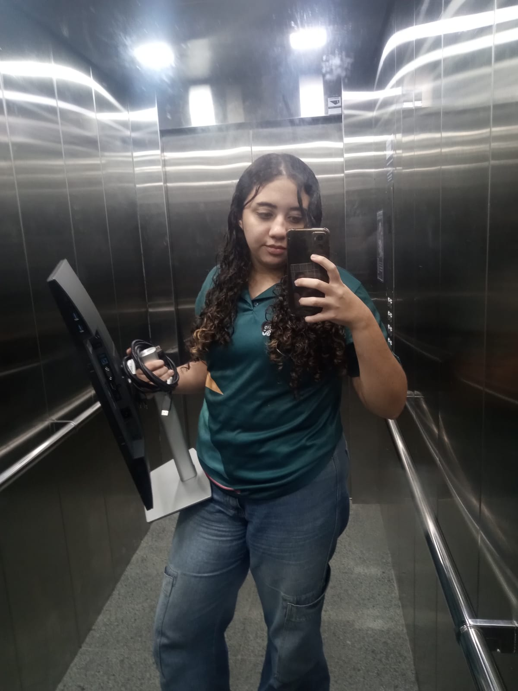
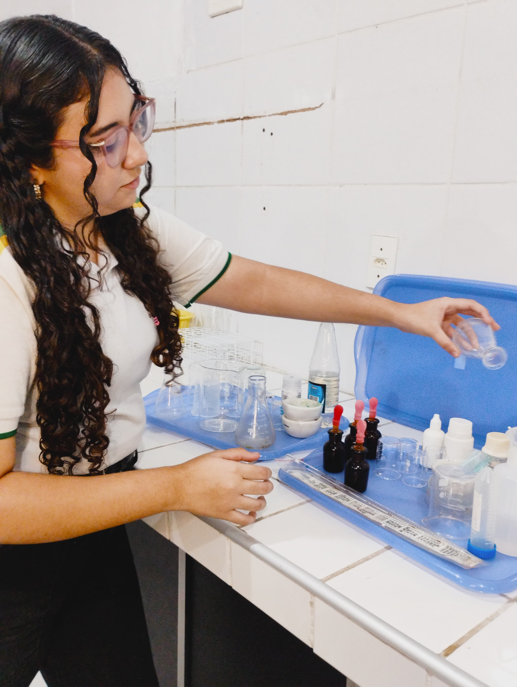
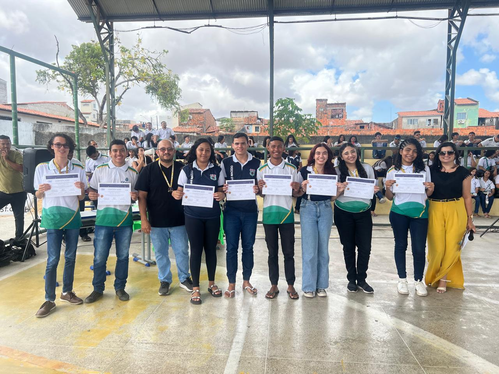
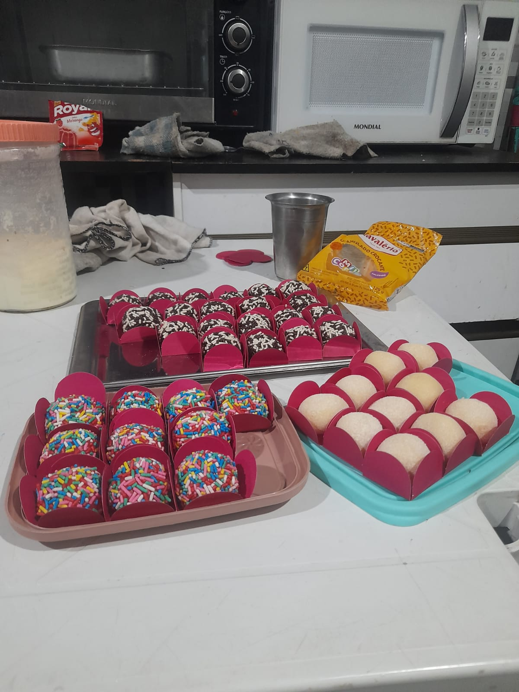
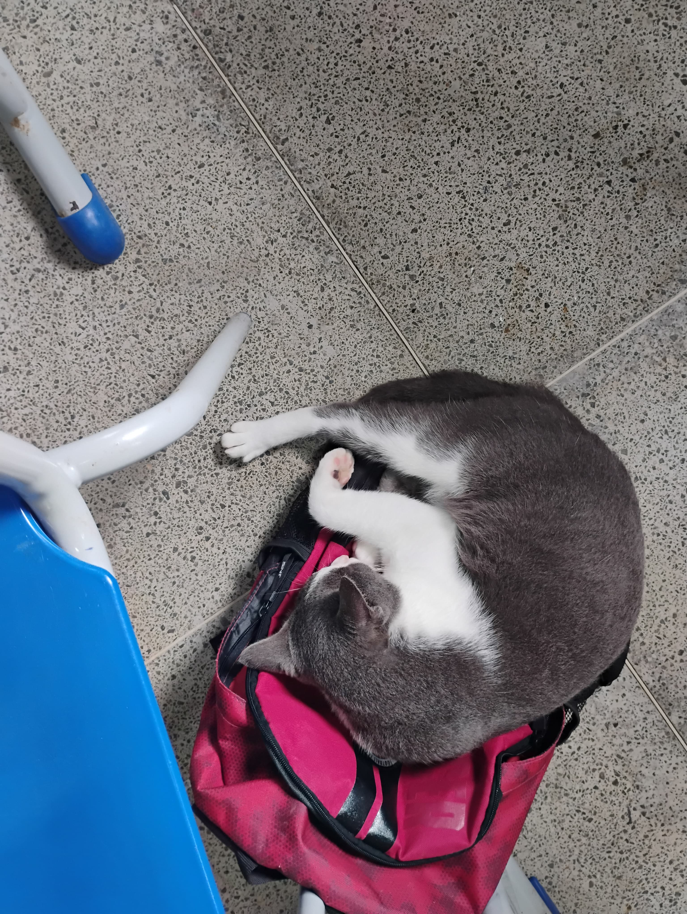
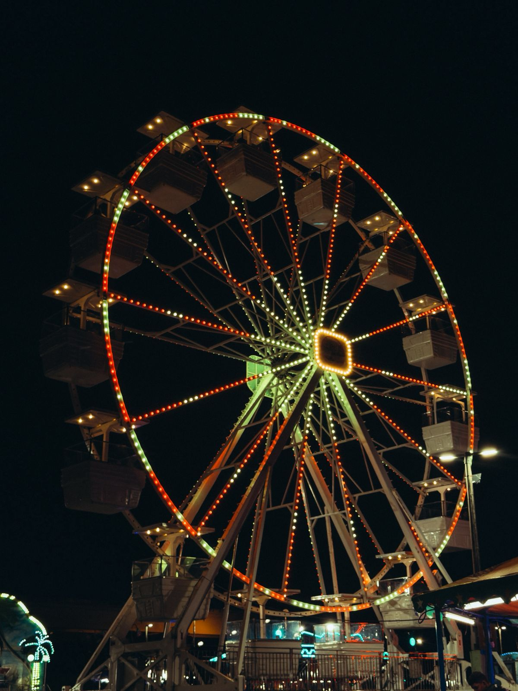
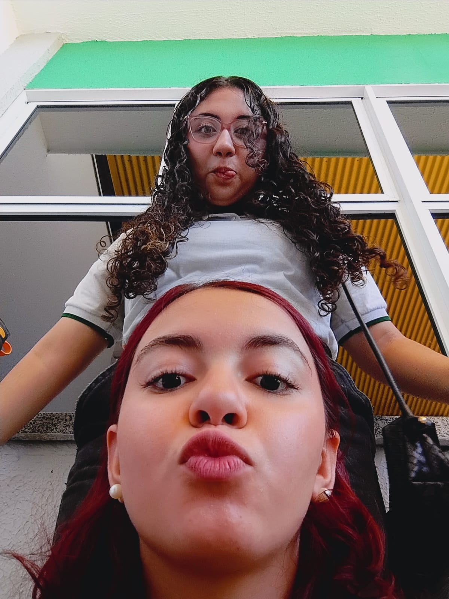

A Little About Me
I'm a student from Fortaleza, Brazil, who loves discovering new things and exploring different interests. I've always been curious about how the world works, and I enjoy turning that curiosity into creative ideas and new experiences.

What Shapes Me
Science, creativity, and the people around me have shaped the way I learn and see the world. Through school projects, leadership, and new experiences, I've discovered how much I enjoy learning by doing and sharing ideas with others.


Beyond Academics
Outside the classroom, I love cooking for my friends and teachers, learning languages, spending time with people I care about, and discovering new places. I also have a soft spot for cats — I can never resist stopping to say hello to one!



